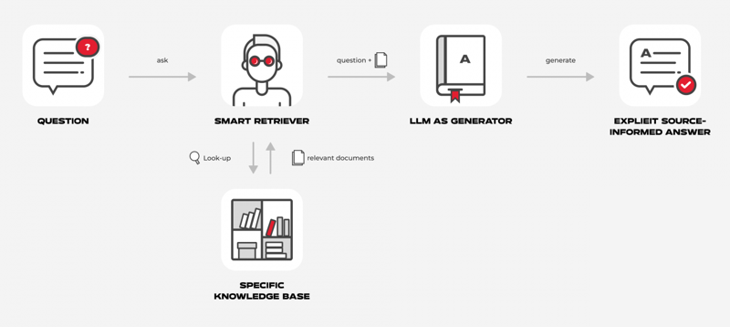
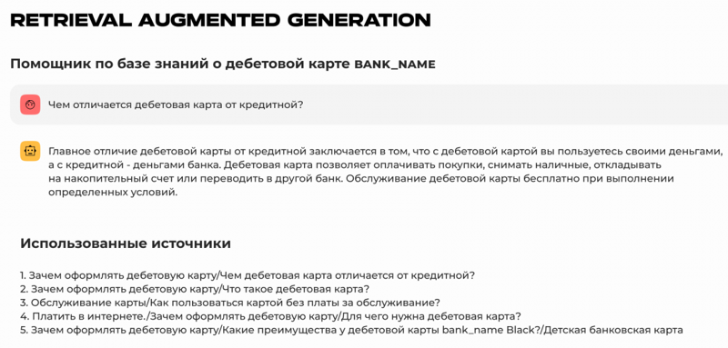
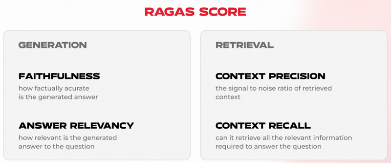
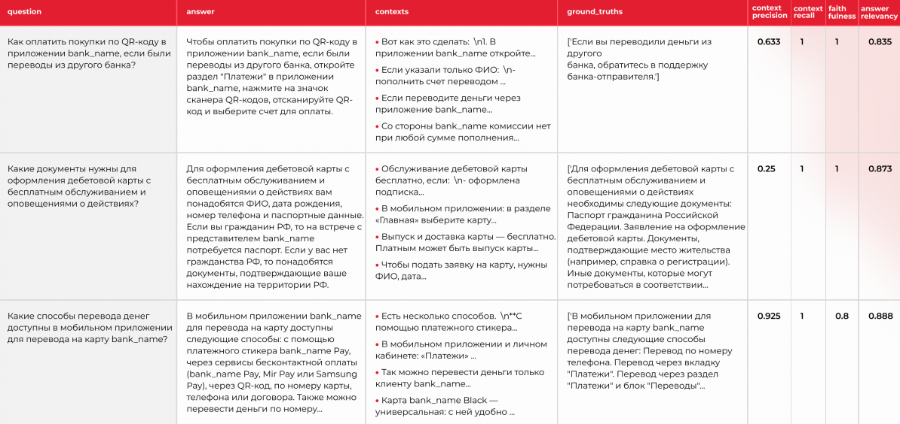

Как общаться с базой знаний на естественном языке с помощью LLM (и объективно оценить работу полученной системы)
Привет, Хабр! Меня зовут Даниил, работаю в ML-отделе Doubletapp. В статье расскажу про особенности применения больших языковых моделей для оптимизации бизнес-процессов.
Большая языковая модель (LLM) — это тип языковой модели, который способен распознавать и генерировать осмысленные тексты, а также другие сложные типы данных (например, код). Такого рода модели обучаются на огромных массивах данных, чаще всего собранных из открытых источников. За счет объема обучающей выборки, а также высокого числа параметров они занимают лидирующие строчки в бенчмарках по различным задачам (например, суммаризация, QA, генерация кода и т. д.)
Тем не менее LLM все еще имеют ряд проблем, одной из которых является галлюцинирование (придумывание фактов). Сложно винить модель за то, что она не знает, как устроен тот или иной процесс/продукт в вашей компании, и пытается придумать вразумительный ответ. Поэтому нужно подсказать LLM фактическую информацию, а она уже даст нам понятную человеку персонализированную реплику.
Такая система ответов на вопросы с использованием фактической информации называется RAG (Retrieval Augmented Generation). Она может использоваться в различных сценариях, например:
Данная статья состоит из двух частей:
В качестве данных для примера использовалась информация, размещенная в разделе базы знаний о дебетовой карте для клиентов желтого банка.
Любой RAG, как понятно из расшифровки, состоит из трех этапов:

Является первым и самым важным шагом в системе, именно от него будет зависеть, насколько верным и полным окажется финальный ответ.
Качество извлечения зависит от нескольких составляющих.
Первое, на что стоит обратить свое внимание, — данные.
Логично ли разбиты темы? Рассматриваются ли они только в одном месте или в нескольких? Можете ли вы сами ответить на поставленный вопрос, используя информацию из текста? Если вы не сможете ответить на вопрос, то и система с высокой вероятностью не справится с этим.
В свою очередь, запутанные по структуре и содержанию данные не позволяют эффективно разбить текст на небольшие кусочки, имеющие в себе законченную мысль. Избыточная или противоречивая информация повлияет на качество поиска — будет сложнее найти верный контекст.
Разбиение играет важную роль в построении процесса извлечения данных. То, как будут разбиты данные, будет определять, получит LLM наиболее релевантный и полный контекст для ответа или нет.
Существует множество стратегий разбиения текста — одной из самых популярных является деление на фиксированные части (chunk’и), часто в таких случаях имеет смысл делать разбиение с перекрытием, чтобы не потерять мысль на середине предложения. Другой стратегией может быть тематическое разбиение, например, по абзацам или заголовкам тем.
В целом, размер chunk’a может быть определен исходя из логики ваших данных, но этот параметр может варьироваться, и точно стоит попробовать несколько вариантов. Trade-off получается таким: меньшие по размеру кусочки содержат более конкретную мысль, а соответственно лучше обнаруживаются нашим поиском, но, в свою очередь, они могут ухудшить процесс генерации из-за отсутствия окружающего их контекста.
Поиск можно формально разделить на два вида: векторный и поиск по ключевым словам. Векторный поиск — это метод поиска информации, в котором тексты представляются в виде векторов, полученных с помощью ML-модели. Затем происходит поиск наиболее близкого вектора. Векторный поиск сейчас достаточно популярен, но не является панацеей, так как его качество сильно зависит от модели, которую мы используем для создания эмбеддингов. Стоит попробовать key-word поиск, например, TF-IDF или BM-25 и сравнить их возможности с векторными вариантами или же использовать гибридный поиск. Так как похожая выдача не всегда является релевантной, то эффективной стратегией может стать фильтрация по метаданным. Например, если наша база знаний представляет собой отзывы на фильмы, а пользователь хочет найти только те киноленты, что были выпущены после 2000 года или те, что имеют рейтинг выше 8, мы можем сделать это с помощью SelfQueryRetriever. Он извлечет метаданные из запроса и отфильтрует по ним результаты.
Другой интересной стратегией является re-writing вопроса пользователя, что позволяет улучшить извлечение данных за счет исправления плохо сформулированных вопросов пользователя.
В моем случае данные представляют собой markdown файл с относительно небольшим количеством информации внутри каждого заголовка. Поэтому при разбиении я буду использовать split по заголовкам.
from typing import List, Tuple
from langchain.document_loaders import TextLoader
from langchain.text_splitter import MarkdownHeaderTextSplitter
# Text loader and title splitter
def load_and_split_markdown(filepath: str, splitter: List[Tuple[str, str]]):
loader = TextLoader(filepath)
docs = loader.load()
markdown_splitter = MarkdownHeaderTextSplitter(headers_to_split_on=splitter)
md_header_splits = markdown_splitter.split_text(docs[0].page_content)
return md_header_splits
Чтобы создать эмбеддинги для chunk’ов используется модель "text-embedding-ada-002" от OpenAI ввиду удобства использования API и высокого качества эмбеддингов.
Для хранения полученных векторов хорошо подходит интегрированная в Langchain Chroma DB. Хочу также отметить, что langchain может работать с множеством векторных баз данных, как open source (ChromaDB, LanceDB, Faiss), так и с платными аналогами — Weaviate, Pinecone, etc. Для нашего примера бесплатной ChromaDB будет вполне достаточно.
В качестве retriever’a выступает EnsembleRetriever, состоящий из поиска по векторам, key-word поиска BM-25 и вышеупомянутого SelfQueryRetriever’a в пропорциях 0.6 / 0.25 / 0.15.
from langchain.llms import OpenAI
from langchain.embeddings import OpenAIEmbeddings
from langchain.vectorstores import Chroma
from langchain.retrievers import BM25Retriever, EnsembleRetriever
from langchain.retrievers.self_query.base import SelfQueryRetriever
def get_retriever(splits, bm25_k, mmr_k,
mmr_fetch_k, metadata_field_info,
document_content_description):
llm = OpenAI(temperature=0)
# Embeddings for vector search
embedding = OpenAIEmbeddings()
# DB for our vectors
vectorstore = Chroma.from_documents(documents=splits, embedding=embedding)
# Key-word retriever
bm25_retriever = BM25Retriever.from_documents(splits)
bm25_retriever.k = bm25_k
# Vector-based retriever
mmr_retriever = vectorstore.as_retriever(
search_type="mmr", search_kwargs={'k': mmr_k, 'fetch_k': mmr_fetch_k}
)
# Self Query Retriever
self_retriever = SelfQueryRetriever.from_llm(
llm,
vectorstore,
document_content_description,
metadata_field_info,
verbose=True
)
# Retriever combination
ensemble_retriever = EnsembleRetriever(
retrievers=[self_retriever, bm25_retriever, mmr_retriever],
weights=[0.15, 0.25, 0.6]
)
return ensemble_retriever
В качестве метаданных я использую часть текста (заголовок, подзаголовок, и т. п.), откуда была взята информация.
CONTENT_DESCRIPTION: Final = "Описание банковских продуктов"
METADATA_INFO: Final = [
AttributeInfo(
name="Заголовок",
description="Часть документа, откуда был взят текст",
type="string or list[string]",
),
]
На данном этапе мы формируем запрос для нашей нейросети, который состоит из найденного нами на предыдущем шаге контекста и prompt’a. Prompt — своего рода инструкция для LLM, которая говорит сети, что нужно сделать с контекстом, который мы в нее подаем.
Обычно в качестве базового prompt’a используется что-то наподобие «Ответь на вопрос, используя контекст ниже», но мы можем изменить его, добавив больше деталей, что может помочь модели ответить более точно. Например, приведенный выше prompt может быть дополнен: «Ты являешься помощником по дебетовой карте банка. Опирайся только на информацию, приведенную ниже, если не знаешь ответ, ответь “не знаю”».
Часто бывает так, что, разбив базу знаний на маленькие кусочки для улучшения качества работы поиска, мы жертвуем полнотой информации, которая подается в модель. Для решения подобной проблемы можно реализовать дополнение контекста неким окном вокруг найденного кусочка. Это можно реализовать как на этапе разбиения — разбить скользящим окном, так и уже на этапе аугментации.
На данном этапе я создал prompt, который, на мой взгляд, хорошо соответствует задаче и будет понятен модели.
PROMT_TEMPLATE: Final = """
Вы помощник по продуктам банка bank_name и отвечаете на вопросы клиентов.
Используйте фрагменты полученного контекста, чтобы ответить на вопрос.
Если вы не знаете ответа, то скажите, что не знаете, не придумывайте ответ.
Используйте максимум три предложения и будьте краткими.\n
Вопрос: {question} \n
Контекст: {context} \n
Ответ:
"""
Генерация является последним этапом в пайплайне и заключается в подаче prompt’a и контекста в модель.
В качестве экспериментов стоит попробовать различные LLM, в зависимости от специфики данных, языка и т. п. одни модели будут работать лучше других. Также могут быть дополнительные требования в виде on-premise развертывания, что оставляет нас только с open source моделями.
Приведу интересное сравнение моделей в задаче RAG, которое увидел на Хабре.
Одним из вариантов повышения качества работы пайплайна является fine-tuning LLM на том домене, который используется в базе знаний. Например, можно применить LoRA/QLoRA подходы.
В качестве модели для генерации была выбрана модель GPT 3.5 Turbo, так как она обеспечивает достаточно хорошее качество генерации при более низкой стоимости (например, в сравнении с GPT-4).
# Setting up the LLM
llm = ChatOpenAI(model_name="gpt-3.5-turbo", temperature=0)
system_message_prompt = SystemMessagePromptTemplate.from_template(Settings.PROMT_TEMPLATE)
chat_prompt = ChatPromptTemplate.from_messages([system_message_prompt])
def format_docs(docs):
return "\n\n".join(doc.page_content for doc in docs)
# Loading texts
docs = load_and_split_markdown('data/docs/bank_name_docs.md', Settings.HEADERS_TO_SPLIT)
# Setting up the retriever
ensemble_retriever = get_retriever(
docs,
Settings.BM25_K, Settings.MMR_K, Settings.MMR_FETCH_K,
Settings.METADATA_INFO, Settings.CONTENT_DESCRIPTION
)
# RAG pipeline
rag_chain_from_docs = (
{
"context": lambda input: format_docs(input["documents"]),
"question": itemgetter("question"),
}
| chat_prompt
| llm
| StrOutputParser()
)
rag_chain_with_source = RunnableParallel(
{"documents": ensemble_retriever, "question": RunnablePassthrough()}
) | {
"documents": lambda input: [doc.metadata for doc in input["documents"]],
"answer": rag_chain_from_docs,
}
Также интересная фишка, которая была добавлена — указание заголовка контекста, использовавшегося при генерации ответа.
Для финального штриха я добавил ChatGPT-подобный интерфейс для комфортного взаимодействия с RAG’ом. Вот что получилось:

Теперь, зная как построить RAG, нужно ответить себе на вопрос: насколько хорошо он работает?
Для этих целей нужно создать систему оценивания и протестировать то, что у нас получилось, в этом нам поможет библиотека RAGAs.
RAGAs — open source фреймворк, разработанный для оценки компонентов пайплайна без помощи человека. Он позволяет создать тестовый датасет и получить оценку построенного нами RAG’a.
При этом в тестовом датасете для создания вопросов по тексту используется GPT-3.5, а ответы на них генерируются GPT-4 как самой совершенной моделью на текущее время. Также в датасет при желании можно добавить составленные вручную вопросы и ответы.
RAGAs принимает следующие входные параметры:
1. question — вопрос пользователя, который он подает в RAG;
2. answer — ответ, сгенерированный нашим пайплайном;
3. contexts — контексты, использовавшиеся при ответе на вопрос;
4. ground_truth — верный ответ на вопрос пользователя.
Теперь поговорим о метриках, которые мы будем использовать. Формально их можно поделить на две независимые части — оценка генерации и оценка извлечения.

Данная метрика нацелена на выявление фактических несостыковок между сгенерированным ответом и контекстом. Она позволяет подсчитать количество галлюцинаций модели — неверная информация или информация, не основанная на контексте относительно всех утверждений в ответе.
Насколько сгенерированный ответ соответствует вопросу. Позволяет понять, в какой степени ответы системы содержат неполную, повторяющуюся или же избыточную информацию.
Численная мера того, насколько полученный контекст соответствует информации, необходимой для ответа на вопрос. Данная метрика считается как отношение корректно извлеченных кусочков относительно всего их количества. Она позволяет найти оптимальный размер chunk’a при разбиении текста.
Context recall — измеряет то, насколько релевантный контекст был найден retriver’ом относительно ground_truth ответов и единственная метрика, которая их использует.
Для начала необходимо сгенерировать синтетический датасет с вопросами, основанными на базе знаний. В RAGAs есть удобный класс — TestGenerator, который позволяет создать датасет в несколько строчек. Однако внутри него зашиты prompt’ы на английском, и чтобы получать ответы на русском, пришлось сделать уточнения ко всем prompt’ам, используемым этим классом.
Для этого я в каждый prompt дописал фразу: «Твоя задача сформулирована на английском, но ответ должен быть на языке контекста», а затем, наследуясь от класса TestGenerator, переопределил функции, использующие prompt’ы.
SEED_QUESTION = HumanMessagePromptTemplate.from_template(
"""\
Your instructions are given in English but the answer should be in the same language as the context.
Your task is to formulate a question from given context satisfying the rules given below:
1.The question should make sense to humans even when read without the given context.
2.The question should be fully answered from the given context.
3.The question should be framed from a part of context that contains important information. It can also be from tables,code,etc.
4.The answer to the question should not contain any links.
5.The question should be of moderate difficulty.
6.The question must be reasonable and must be understood and responded by humans.
7.Do no use phrases like 'provided context',etc in the question
8.Avoid framing question using word "and" that can be decomposed into more than one question.
9.The question should not contain more than 10 words, make of use of abbreviation wherever possible.
context:{context}
""" # noqa: E501
)
Если интересно подробно разобраться в том, как работает цикл построения датасета в TestGenerator, рекомендую ознакомиться с вот этой статьей.
from langchain.document_loaders import TextLoader
from langchain.embeddings import OpenAIEmbeddings
from langchain.chat_models import ChatOpenAI
from ragas.llms import LangchainLLM
from generator import RussianTestGenerator
loader = TextLoader('data/docs/bank_name_docs.md')
docs = loader.load()
# Add custom llms and embeddings
generator_llm = LangchainLLM(llm=ChatOpenAI(model="gpt-3.5-turbo"))
critic_llm = LangchainLLM(llm=ChatOpenAI(model="gpt-4"))
embeddings_model = OpenAIEmbeddings()
# Change resulting question type distribution
testset_distribution = {
"simple": 0.25,
"reasoning": 0.25,
"multi_context": 0.25,
"conditional": 0.25,
}
test_generator = RussianTestGenerator(
generator_llm=generator_llm,
critic_llm=critic_llm,
embeddings_model=embeddings_model,
testset_distribution=testset_distribution
)
synth_data = test_generator.generate(docs, test_size=15).to_pandas()
После создания датасета необходимо получить ответы и сопутствующий контекст от RAG системы
answers = []
contexts = []
for query in tqdm(synth_data.question.tolist(), desc='Generation answers'):
answers.append(rag_chain_with_source.invoke(query)['answer'])
contexts.append([unicodedata.normalize('NFKD', docs.page_content) for docs in ensemble_retriever.get_relevant_documents(query)])
ground_truth = list(map(ast.literal_eval, synth_data.ground_truth.tolist()))
data = {
"question": synth_data.question.tolist(),
"answer": answers,
"contexts": contexts,
"ground_truths": ground_truth
}
dataset = Dataset.from_dict(data)
result = evaluate(
dataset = dataset,
metrics=[
context_precision,
context_recall,
faithfulness,
answer_relevancy,
],
).to_pandas()
Таким образом, мы получили датасет из 15 примеров, три из них можно увидеть на изображении.

Средние значения метрик на датасете следующие:
context_precision — 0,586185516
context_recall — 0,855654762
faithfulness — 0,852083333
answer_relevancy — 0,836044521
Исходя из полученных метрик можно сказать, что система может быть улучшена преимущественно за счет экспериментов с retriever’ом.
Полный код примера вместе с данными и оценкой находится на github.
Сегодня мы рассмотрели step-by-step создание RAG системы и то, какие тонкости существуют в разработке каждого этапа, а также получили численную оценку работы системы с помощью фреймворка RAGAs.